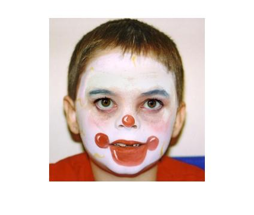
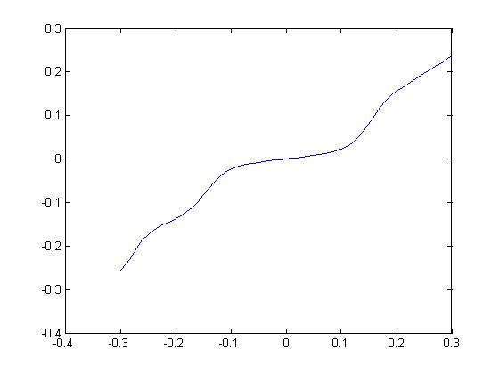
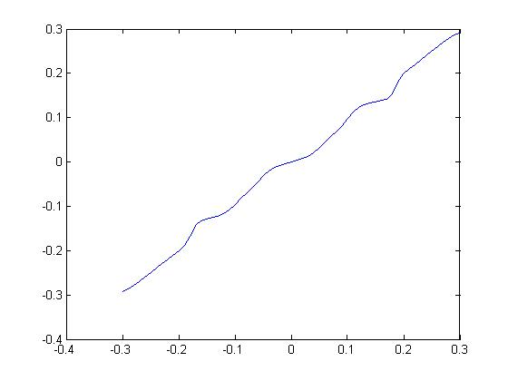
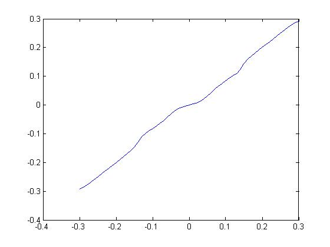
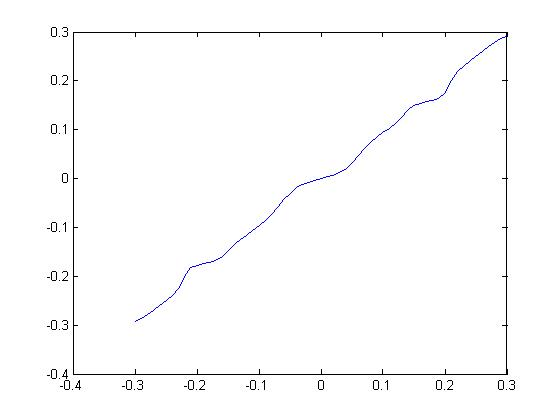
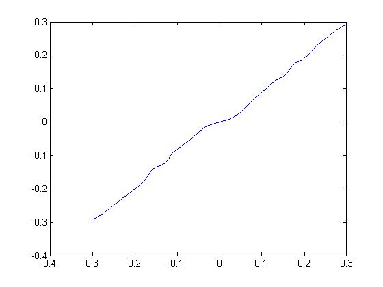

Computational Photography - Homework 2
Convolution using Fast Fourier Transform
Associated Matlab files: convtest.m
Image blending
Associated Matlab files: blend.m, blend_driver.m
Combined image

Image denoising
Associated Matlab files: denoise.m
Signal corrupted by noise
Reconstructed image using Wiener denoising (PSNR = +28.92 dB)
Reconstructed image using wavelet coring (PSNR = +30.92 dB)
Band estimators
Estimator #1

Estimator #2

Estimator #3

Estimator #4

Estimator #5
